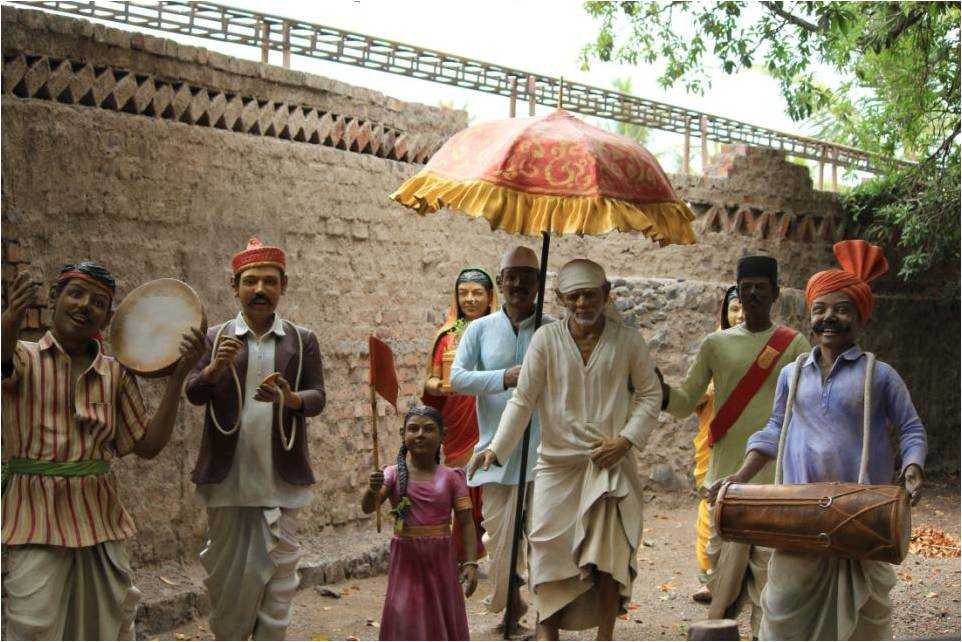
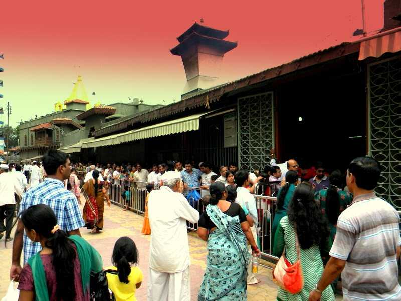

|  |
|
 |
"The land of Sai Baba" Shirdi Tourism The home of great saint Sai Baba, Shirdi is a religious site close to Nasik with various temples apart from the famous Sai Baba temple and a few historical sites. Located in the Ahmednagar district of Maharashtra, Shirdi holds a strong importance as a holy and pilgrim place by Sai Baba devotees. The small town is filled with religious spots and activities which will soothe and calm your soul on its visit. The air here carries chants lingering with spirituality and the whole grandness about the same too will leave you spellbound. There are many religious places to be seen in Shirdi such as Chavadi, Samadhi Mandir, Dwarkamai masjid, Shani Shignapur, to name a few.